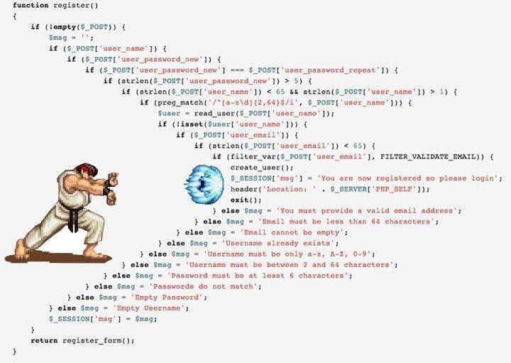

.left-column[ ] .right-column[ - no statements - everything is an expression - source code is an expression too (AST) - completely immutable data - forget about variables - forget about loops (hello recursion) - forget about return and goto .center[ ] ] --- .left-column[ ### Pipe |> ] .right-column[ - pipe `|>` is special infix macros came from F# ```haskell infixl 0 |> (|>) a b = b $ a ``` - we ❤️ `|>` - every function in Elixir is designed to work with |> - your functions also should be designed like this - subject should be always 1st argument - please no LISP in Elixir code))))))))) ❌ ```elixir Enum.sum(Enum.map(Enum.filter(1..100, &(rem(&1, 2) == 0)), &(&1 * 2))) ``` ✅ ```elixir 1..100 |> Enum.filter(&(rem(&1, 2) == 0)) |> Enum.map(&(&1 * 2)) |> Enum.sum ``` ] --- .left-column[ ### Pipe |> ### Assigns / PM ] .right-column[ - variables have no power anymore (immutable) - if value not reused > 1 times, assignment unnecessary - pattern matching better than assignment - pattern match only what you really need - pattern matching replaces tricky `if` / `else` / `=` / `==` - pattern matching make code more expressive - pattern mathing promotes Dialyzer type inference - we ❤️ pattern matching #### Use pattern matching as often as possible (not kidding) #### At the beginning try totally forget about assignments ] --- .left-column[ ### Pipe |> ### Assigns / PM ] .right-column[ ❌ ```elixir def hello(user) do if is_map(user) do first_name = user.first_name last_name = user.last_name if is_binary(first_name) and is_binary(last_name) do greetings = "Hello, #{first_name} #{last_name}" {:ok, greetings} else {:error, :wrong_arguments} end else {:error, :wrong_arguments} end end ``` we do not need user variable, we need something inside it ✅ ```elixir def hello(%{first_name: first_name, last_name: last_name}) when is_binary(first_name) and is_binary(last_name) do {:ok, "Hello, #{first_name} #{last_name}"} end def hello(_) do {:error, :wrong_arguments} end ``` ] --- .left-column[ ### Pipe |> ### Assigns / PM ### Functions ] .right-column[ - smaller functions are more readable - special ability - multiple function clauses - pattern matching + guards in function clauses ❌ ```elixir def fac(data) do if data == 0 do 1 else if is_integer(data) and (data > 0) do data * fac(data = 1) else raise("wrong argument") end end end ``` ✅ ```elixir def fac(0), do: 1 def fac(data) when is_integer(data) and (data > 0) do data * fac(data = 1) end def fac(_), do: raise("wrong argument") ``` ] --- .left-column[ ### Pipe |> ### Assigns / PM ### Functions ] .right-column[ ❌ ```elixir def map(data, func) do if length(data) == 0 do [] else {head, tail} = List.pop_at(data, 0) [func.(data)] |> Enum.concat(map(tail, func)) end end ``` ✅ ```elixir def map([], _), do: [] def map([head|tail], func) when is_function(func, 1) do [func.(head)|map(tail)] end ``` ] --- .left-column[ ### Pipe |> ### Assigns / PM ### Functions ### If / Else ] .right-column[ - returns value as any expression - implicit `nil` when `else` was not provided - opinion: use **only** for side-effects stuff (ignore value) ❌ ```elixir def hello(user) do if user == "Joe" do "Hello, father of Erlang!" end # # forgot to provide else = implicit nil in runtime # very common mistake, no compiler warnings # end ``` ✅ ```elixir def hello(user, notation) do if notation == :warning do Rabbit.send(:suspicious, user) Logger.warn("suspicious user #{user}") end "Hello, #{user}" end ``` ] --- .left-column[ ### Pipe |> ### Assigns / PM ### Functions ### If / Else ### Cond ] .right-column[ - returns value as any expression - `cond` is used when we need to match conditions - like `else if` or `elsif` from other languages - not functional style, no pattern matching - I used `cond` only 2-3 times in my Elixit career - usually `case` expression is more preferred ```elixir cond do 2 + 2 == 5 -> "This will not be true" 2 * 2 == 3 -> "Nor this" 1 + 1 == 2 -> "But this will" true -> "This default clause will never match" end ``` ] --- .left-column[ ### Pipe |> ### Assigns / PM ### Functions ### If / Else ### Cond ### Case ] .right-column[ - returns value as any expression - should be used when you care about expression value - most commonly used flow control expression in Elixir - ❤️ unlike if / else do not have implicit return value - ❤️ pattern matching in case clauses - ❤️ guard expressions in case clauses .center[ ] ] --- .left-column[ ### Pipe |> ### Assigns / PM ### Functions ### If / Else ### Cond ### Case ] .right-column[ ❌ ```elixir def hello(json) when is_binary(json) do result = Poison.decode(json) if elem(result, 0) == :ok do data = elem(result, 1) if is_map(data) do first_name = data["first_name"] last_name = data["last_name"] cond do (first_name == "Joe") and (last_name == "Armstrong") -> {:ok, "Hello, father of Erlang!"} is_binary(first_name) and is_binary(last_name) -> {:ok, "Hello, #{first_name} #{last_name}"} true -> {:error, data} end else {:error, error} end else {:error, error} end end ``` ] --- .left-column[ ### Pipe |> ### Assigns / PM ### Functions ### If / Else ### Cond ### Case ] .right-column[ ✅ ```elixir def hello(json) when is_binary(json) do case Poison.decode(json) do {:ok, %{"first_name" => "Joe", "last_name" => "Armstrong"}} -> {:ok, "Hello, father of Erlang!"} {:ok, %{"first_name" => first_name, "last_name" => last_name}} when is_binary(first_name) and is_binary(last_name) -> {:ok, "Hello, #{first_name} #{last_name}"} error -> {:error, error} end end ``` ] --- .left-column[ ### Pipe |> ### Assigns / PM ### Functions ### If / Else ### Cond ### Case ] .right-column[ - `case` is expression so can be piped `|>` ❌ ```elixir def badmath(x) do result = 1..x |> Enum.filter(&(rem(&1, 2) == 0)) |> Enum.map(&(&1 * 2)) |> Enum.sum case result < @limit do true -> "too low" false -> "ok" end end ``` ✅ ```elixir def badmath(x) do 1..x |> Enum.filter(&(rem(&1, 2) == 0)) |> Enum.map(&(&1 * 2)) |> Enum.sum |> case do result when result < @limit -> "too low" _ -> "ok" end end ``` ] --- .left-column[ ### Pipe |> ### Assigns / PM ### Functions ### If / Else ### Cond ### Case ### With ] .right-column[ ❌  Typical PHP code. Of course there is a lot of Elixir / Erlang code like this. ] --- .left-column[ ### Pipe |> ### Assigns / PM ### Functions ### If / Else ### Cond ### Case ### With ] .right-column[ ✅ ```elixir with {:ok, first} when is_binary(first) <- Map.fetch(user, :first), {:ok, last} when is_binary(last) <- Map.fetch(user, :last), {:ok, %HTTPoison.Response{status_code: 200, body: body}} <- HTTPoison.get("http://hello.ee/#{first}/#{last}") do {:ok, body} else {:error, response = %HTTPoison.Response{}} -> {:error, "something went wrong with http request #{inspect response}"} error -> {:error, "something went wrong with user #{inspect error}"} end ``` - `with` is special expression to avoid streetfighter style - pattern matching is supported - guards are supported - should be used when > 1 operation (else use `case`) ] --- name: compiletime .left-column[ ] .right-column[ .center[ ### Elixir ] - 👎 dynamic typing - 👎 no classes - 👎 no constants .center[ ### How to? ] - make code more strict - make code refactorable - make runtime more predictable ] --- template: compiletime .right-column.center[ #### Compiler can do this in compile-time! (if you know some tricks) ] --- .left-column[ ### Structures ] .right-column[ - Elixir structures are compile-time citizens - Default values supported - Compile-time checks of fields in PM and literals - Easy refactoring - Model with static amount of fields? **Use structure!** ❌ ```elixir user = %{first_name: "Joe", last_name: "Armstrong"} ``` ✅ ```elixir defmodule User do defstruct first_name: "Joe", last_name: "Armstrong" end iex(2)> %User{} %User{first_name: "Joe", last_name: "Armstrong"} ``` ] --- .left-column[ ### Structures ] .right-column[ - **Never** use access protocol with structures - golden rule : always use pattern matching ❌ ```elixir "Hello #{user.first_name} #{user.last_name}!" "Hello #{user[:first_name]} #{user[:last_name]}!" # still compiles without warnings... "Hello #{user.fooooooooo} #{user.baaaaar}!" "Hello #{user[:fooooooooo]} #{user[:baaaaar]}!" ``` ✅ ```elixir %User{first_name: first_name, last_name: last_name} = user "Hello #{first_name} #{last_name}!" # gotcha!!! compile error here %User{fooooooooo: first_name, baaaaar: last_name} = user ``` ] --- .left-column[ ### Structures ### Access ] .right-column[ - opinion: **to not use** access protocol in Elixir - implicit `nil` if value is not presented - PM + guards make runtime more predictable - PM + guards make code more readable - PM + guards promotes Dialyzer type inference .center[ Pattern matching + guards is better than access protocol. ] ```elixir users_balances = %{joe: 100, mike: 50} ``` ❌ ```elixir "Joe has balance #{users_balances.joe}" "Joe has balance #{users_balances[:joe]}" ``` ✅ ```elixir case Map.fetch(users_balances, :joe) do {:ok, value} when is_integer(value) -> "Joe has balance #{value}" :error -> "Joe is not presented yet" end ``` ] --- class: center, middle # Thanks [back to index](index.html)